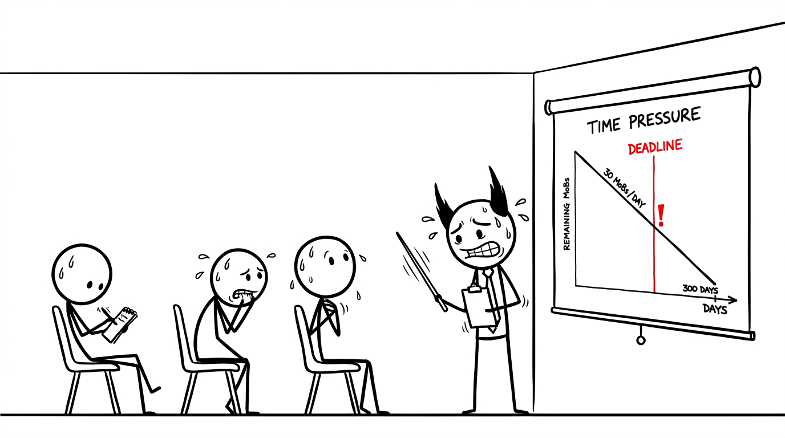

<section id="60834668" data-transition="fade" style="display:flex; align-items:center; justify-content:center; padding:0; background:#fcfcfa">

<p style="position:absolute;left:0;bottom:10px;width:1920px;margin:0;text-align:center;font-family:'Patrick Hand', 'Trebuchet MS', sans-serif;font-size:22px;color:#8a8f98">Copyright Dobromir Montauk 2026</p>
<aside><b>Time pressure.</b> If ALL the bricks don’t arrive by date X, all that winning is worthless. Keep Day 1’s pace forever and we finish in 300 days; the deadline is months before that. This is the moment winning alone stops being enough.</aside>
</section>
